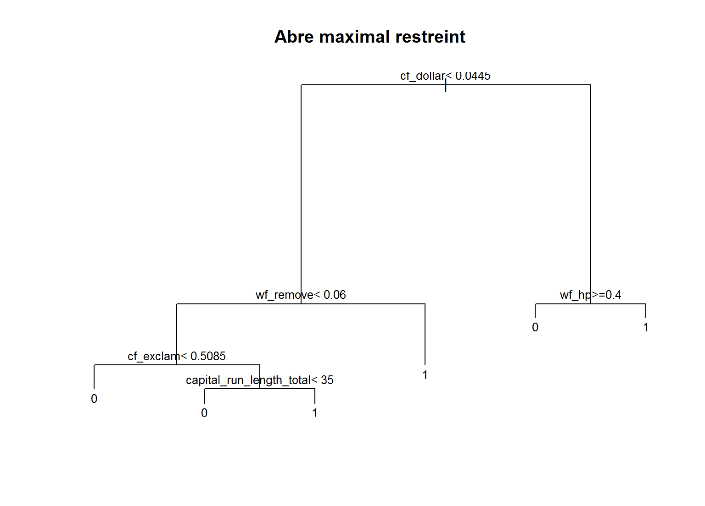

Cet onglet à pour objectif de présenter la méthode CART (Classification And Regression Trees), Breiman et al (1984). La méthode CART sera présentée à travers la fonction rpart {rpart} implémentée dans RStudio.
Le modèle rpart {rpart} sera utilisé sur les données “SPAM”. Pour rappel, le fichier de données “SPAM” se compose de 4601 lignes et 58 colonnes dont une variable classifiante binaire (‘0’:non spam/email ‘1’:spam). Une présentation des données et une rapide analyse descriptive sont disponibles sur l’onglet “Régression logistique”.
La méthode CART s’inscrit dans la famille des méthodes de construction d’arbres de décision. En effet, CART est analogue à l’algorithme ID3 ID3 ou encore les algorithmes C4.5 et C5.0 C4.5 C5.0, à ceci près que CART construit un arbre binaire.
La méthode CART, Breiman et al (1984), est une méthode supervisée et non paramétrique de construction d’arbres de décision. Nous avons deux cas de figure :
Dans les deux cas, l’abre construit est binaire.
Notations :
Soit un échantillon de données noté \(E=(X_n,j_n)_{1\le n \le N}\) où \(X_n=(x_n^1,x_n^2,...,x_n^q)\) est un réalisation de la variable aléatoire \(X=(X^1,X^2,...,X^q)\) à valeurs dans \(\mathbb{R}^q\). Ici \(j_n\) est la variable Y qui est soit qualitative (à \(j\) modalités), soit quantitative.
Soit \(t \subset E\) un noeud de l’arbre, noté \(A\), construit sur l’échantillon de données d’apprentissage \(E\).
Quelques notations supplémentaires sont nécessaires dans le cas d’une classification (Y qualitative) :
Un estimateur \(P(j|t)\) (probabilité a postériori qu’une observation ait la classe \(j\) sachant qu’elle appartient à \(t\)) est noté \(p(j|t)=\frac{p(j,t)}{p(t)}\), connaissant \(\pi_j\) c’est égal à \(\frac{N_j(t)}{N(t)}\)
Que ce soit une classification ou une régression, CART construit un arbre binaire de façon itérative.
1- On cherche une règle de division binaire \(d=d(X^m,S)\).
Cette règle de division permet d’obtenir deux sous-ensembles \(t_g\) et \(t_d\), issus de \(E\) (la racine, noté aussi \(t_0\)). L’objectif est de retenir la variable qui pour un seuil \(s\), rend la somme des hétérogénéités des noeuds fils minimale (pour Y qualitative). On dit aussi que la règle de décision optimale est celle qui minimise la somme des déviances intra classes des noeuds déscendants.
Pour \(Y\) quantitative, on maximise \(\Delta \hat R (d,t)\) :
Pour \(Y\) qualitative, on maximise \(\hat h(d,t)\) (fonction d’hétérogénéité) :
Deux fonctions d’hétérogénéité possibles :
2- Une fois le noeud contruit sur la variable, on continue de façon récurcive jusqu’à condition d’arrêt.
Les conditions d’arrêt peuvent être :
A l’issu de cette première étape, l’algorithme CART construit un arbre dit “maximal” que l’on pourra rendre optimal par la suite à l’aide d’une procédure d’élagage. L’algorithme CART fournit également d’autres mesures par rapport aux divisions.
Nous avons vu précedemment que nous cherchons à maximiser \(\Delta \hat R (d,t)\) ou \(\hat h(d,t)\) selon la nature de \(Y\). Ce qui permet d’obtenir une divisions optimale.
Notons \(d^*\), la division optimale pour un noeud \(t\) qui maximise la décroissance de la déviance. Cette division optimale pour un noeud \(t\) correspond au noeud \(t\) de l’arbre construit (variable active).
La division ou les divisions concurrentes sont les autres maximums et correspondent à d’autres variables pour un noeud \(t\).Ces variables ne feront pas parti de l’arbre construit.
L’importance des variables est calculée dans les deux cas (régression ou classification).
Importance d’une variable \(X^m\) d’un arbre noté \(A\) :
La méthode CART est dite hiérarchique, car elle propose un classement des variables par importance (variables actives pour la consutruction de l’arbre mais aussi des variables de substitution). Cette hiérarchisation peut permettre par la suite d’élaborer un modèle plus robuste mais aussi servir à d’autres méthodes statistiques.
Nous allons utiliser la méthode rpart {rpart}, cette méthode sera appliquée sur le jeu de données “SPAM”. Nous sommes ici dans un cas de classification binaire (Y=0 : “mail”, Y=1 : “spam”).
Dans un premier temps, le modèle sera analysé à travers les données d’apprentissage (“train”) et par la suite nous pourrons y appliquer des données “test”.
Afin de mieux comprendre la construction d’un arbre rpart, nous allons généré un arbre maximal avec les paramètres par défaut de la fonction rpart.
Le modèle :
library(rpart)
arbre0 <- rpart(DATASET.train$spam~.,data=DATASET.train) #lancement par défaut avec GINI
arbre0## n= 3067
##
## node), split, n, loss, yval, (yprob)
## * denotes terminal node
##
## 1) root 3067 1225 0 (0.60058689 0.39941311)
## 2) cf_dollar< 0.0445 2252 514 0 (0.77175844 0.22824156)
## 4) wf_remove< 0.06 2043 325 0 (0.84092022 0.15907978)
## 8) cf_exclam< 0.5085 1840 192 0 (0.89565217 0.10434783) *
## 9) cf_exclam>=0.5085 203 70 1 (0.34482759 0.65517241)
## 18) capital_run_length_total< 35 72 16 0 (0.77777778 0.22222222) *
## 19) capital_run_length_total>=35 131 14 1 (0.10687023 0.89312977) *
## 5) wf_remove>=0.06 209 20 1 (0.09569378 0.90430622) *
## 3) cf_dollar>=0.0445 815 104 1 (0.12760736 0.87239264)
## 6) wf_hp>=0.4 48 5 0 (0.89583333 0.10416667) *
## 7) wf_hp< 0.4 767 61 1 (0.07953064 0.92046936) *## représentation graphique de l'arbre
plot(arbre0, main="Abre maximal")
text(arbre0,pretty=0,cex=0.8)
Maintenant que nous avons généré un arbre maximal avec les paramètres par défaut de la fonction. Il nous faut identifier ces paramètres et les analyser.
La fonction summary() permet d’avoir le détail de construction de l’arbre. Cela serait trop long d’afficher tout le résultat de la procédure, un seul noeud et une feuille suffiront.
En effet, un arbre est construit de façon récurcive selon les mêmes règles jusqu’à conditions d’arrêt.
summary(arbre0)
# Call:
# rpart(formula = DATASET.train$spam ~ ., data = DATASET.train)
# n= 3067
#
# CP nsplit rel error xerror xstd
# 1 0.49551020 0 1.0000000 1.0000000 0.02214215
# 2 0.13795918 1 0.5044898 0.5216327 0.01836039
# 3 0.05142857 2 0.3665306 0.3918367 0.01642577
# 4 0.03265306 3 0.3151020 0.3232653 0.01515973
# 5 0.03102041 4 0.2824490 0.3151020 0.01499509
# 6 0.01000000 5 0.2514286 0.2775510 0.01419349
#
# Variable importance
# cf_dollar wf_remove wf_000 wf_money
# 29 12 11 10
# capital_run_length_longest cf_exclam wf_receive wf_order
# 8 6 6 5
# wf_hp capital_run_length_total wf_hpl capital_run_length_average
# 3 2 1 1
# wf_your wf_650 wf_telnet
# 1 1 1
#
# Node number 1: 3067 observations, complexity param=0.4955102
# predicted class=0 expected loss=0.3994131 P(node) =1
# class counts: 1842 1225
# probabilities: 0.601 0.399
# left son=2 (2252 obs) right son=3 (815 obs)
# Primary splits:
# cf_dollar < 0.0445 to the left, improve=496.6125, (0 missing)
# cf_exclam < 0.0785 to the left, improve=484.0605, (0 missing)
# wf_remove < 0.01 to the left, improve=395.6875, (0 missing)
# wf_your < 0.405 to the left, improve=389.2698, (0 missing)
# wf_free < 0.075 to the left, improve=371.6118, (0 missing)
# Surrogate splits:
# wf_000 < 0.045 to the left, agree=0.831, adj=0.364, (0 split)
# wf_money < 0.03 to the left, agree=0.828, adj=0.351, (0 split)
# wf_receive < 0.035 to the left, agree=0.786, adj=0.194, (0 split)
# capital_run_length_longest < 72.5 to the left, agree=0.785, adj=0.193, (0 split)
# wf_order < 0.095 to the left, agree=0.784, adj=0.188, (0 split)
#
# Node number 5: 209 observations
# predicted class=1 expected loss=0.09569378 P(node) =0.06814477
# class counts: 20 189
# probabilities: 0.096 0.904 La fonction summary() fournit plusieurs types d’information :
arbre$cptable : matrice d’information du choix du cp optimal pour l’élagage (pruning).
arbre0$variable.importance : l’importance de chaque variable (hiérarchisation).
arbre0$splits : matrice d’information sur les noeuds \(t\).
Nous allons dans un premier temps nous focaliser sur les “splits”, a travers ces splits nous allons étudier plusieurs aspects.
Avant d’aller plus loin, il est important de spécifier que l’on peut choisir la fonction d’hétérogénéité.
parms = list(split = "gini") pour l’indice de Gini.
parms = list(split = "information") pour l’Entropie.On peut le vérifier avec l’objet en sortie du modèle arbre0$parms$split (1:Gini, 2:Entropie).
Pour les deux fonctions, cela ne change rien à l’affichage, les seuils de coupe peuvent être différents ou l’ordre des variables.
⚠⚠⚠
Nous allons utiliser la valeur par défaut de rpart et travailler avec l’indice de Gini.
Quelques options supplémentaires à l’aide de rpart.control(). Nous allons aussi voir quelles sont les valeurs par défaut.
Ajouter des contraintes sur les noeuds et feuilles :
minsplit = 20 : nombre d’observations minimum par noeud \(t\).
minbucket = round(minsplit/3) nombre d’observations minimum par feuille.Fixer le paramètre de compléxité, par défaut cp = 0.01. Nous détaillerons plus tard ce que signifie ce critère de pénalité. Pour faire simple, plus le cp est proche de 1, moins l’arbre sera profond.
Modifier l’affichage des splits en sortie :
maxcompete = 4 : nombre de splits concurrents.
maxsurrogate = 5 nombre de variables de substitution affichées.Les variables “surrogate” ont un impact sur la liste finale des variables d’importance ainsi que sur le temps de calcul de la méthode rpart. D’autres options sont disponibles via rpart.control().
L’arbre maximal obtenu, avec les paramètres par défaut, comporte 5 noeuds et 6 feuilles (soit 5 variables). On peut voir que l’arbre prédit à gauche la classe ‘0’ (“mail”) et à droite la classe ‘1’ (“spam”).
Pour analyser la sortie brute du modèle, nous avons :
Hormis pour la racine (root), la valeur du seuil de coupe de la variable est affiché avec le nom de la variable.